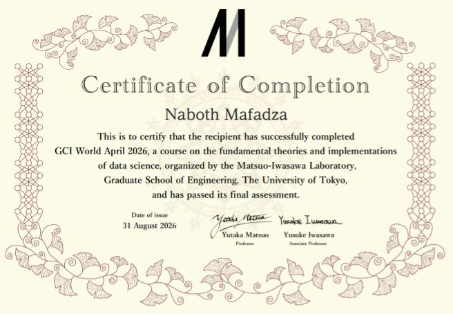

01
Available for opportunities
Hello, I'm
Naboth Mafadza
Information Technology Student & AI / Software Developer
I build practical software systems using artificial intelligence, web technologies, data, networking and modern programming tools.
AI_SYSTEM / NETWORK
AI
CORE
Machine Learning
Software
Networking
IoT
Data
01 / ABOUT
Building with purpose.
01
NM
Naboth Mafadza
Student Developer
I am a Bachelor of Science (Honours) in Information Technology student at Chinhoyi University of Technology, with a strong interest in artificial intelligence, software development, web technologies, networking and IoT.
My approach is practical: I enjoy taking an idea, understanding the problem behind it, designing a solution and turning it into a working system. My academic and personal projects have given me experience working with machine learning, databases, APIs, desktop applications and network-security concepts.
I am continuously developing my technical skills through projects, experimentation and hands-on learning.
07+
Projects Built
06+
Technology Areas
13
School Passes
2028
Expected Graduation
02 / SKILLS
Technical toolkit.
02
02
Web & Backend
03
AI & Data
04
Databases
05
Networking & Systems
06
Tools
03 / PROJECTS
Things I've built.
03
01
AI / MACHINE LEARNING
↗
AI Student Performance Prediction System
A web-based academic monitoring and machine learning system that analyses student academic and attendance information to predict performance categories and provide recommendations.
Prediction
Academic Records
Attendance
Risk Analysis
Python · Flask · SQLAlchemy ·
scikit-learn
02
AI / CYBERSECURITY
↗
AI Network Intrusion Detection System
An AI-assisted network security platform designed to classify network traffic, record predictions and monitor potential threats and alerts.
Threat Detection
Traffic Analysis
Alerts
Monitoring
Python · Flask · React · PostgreSQL ·
Machine Learning
03
BACKEND / API
↗
MiniRewardServices
A REST API for user accounts and reward transactions with authentication, validation, persistent storage and automated tests.
JWT Authentication
Rewards
PostgreSQL
Testing
Python · FastAPI · PostgreSQL ·
SQLAlchemy · Pytest
04
DSA / DESKTOP
↗
Banking System Simulator
A Python desktop banking simulation demonstrating practical use of data structures and algorithms for account management and transaction processing.
Accounts
Transfers
Stack & Queue
Searching & Sorting
Python · Tkinter · Data Structures · Algorithms
MORE WORK
Explore GitHub
↗
Additional academic and personal projects covering web development, Java systems and database-driven applications.
04 / EDUCATION
Academic journey.
04
2024 — 2028
CURRENT
Chinhoyi University of Technology
Bachelor of Science (Honours) in Information Technology
School
School of Engineering Sciences
and Technology
Department
ICT and Electronics
Current Level
2nd Year · 2nd Semester
Graduation
Expected December 2028
AI / ML
Software
Web
Networking
Databases
IoT
03
Advanced Level
3 A-Level Passes
Secondary Education
10
Ordinary Level
10 O-Level Passes
Secondary Education
CERTIFICATION
Learning beyond the classroom.
05

CERTIFICATION / PROGRAMME
GCI AI & Data Science Programme
Completed the GCI Matswou Lab Programme with practical exposure to artificial intelligence and data science. The programme included data preparation, exploratory analysis, machine learning model development, model comparison and communicating technical findings.
View Certificate ↗06 / EXPERIENCE
Practical experience.
06
ACADEMIC & PERSONAL PROJECTS
AI & Machine Learning Development
Built machine learning applications for student performance prediction and network intrusion detection, including data preprocessing, model training, evaluation and integration into software systems.
BACKEND DEVELOPMENT
API & Software Engineering
Developed backend systems and REST APIs using Flask and FastAPI, working with authentication, validation, databases, testing and structured application architecture.
NETWORKING & SECURITY
Network Systems
Developing practical knowledge in computer networking, network monitoring, security concepts, traffic analysis and intrusion detection systems.
07 / CONTACT
Let's build something.
I'm open to connecting with other developers, technology communities, potential collaborators and opportunities where I can learn and contribute.
mafadzanabo@gmail.com ↗